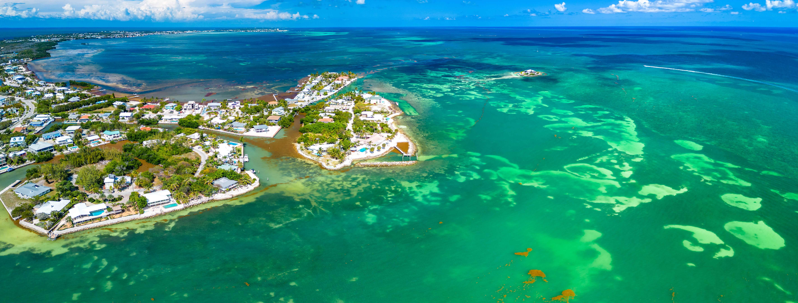

Best time to visit the Florida Keys. A complete month by month guide.
Weather, crowds, pricing, fishing, events, and what each month actually feels like from a Marathon perspective. This is the practical version, not the fluffy version.
The Florida Keys are one of those rare destinations where “there is no bad time to visit” is actually true. The temperature never drops below 65°F. The water stays warm year-round. Something is always running offshore. The restaurants stay open.
But every month has a personality. December through April brings perfect weather and peak prices. May through August brings heat, emptier docks, and better value. September and October carry storm risk but reward flexibility with the lowest prices of the year. November is one of the best-kept secrets in Keys travel.
This guide breaks down every single month from a Marathon perspective. Weather. Crowds. Fishing. Events. And what you should actually expect when you arrive at Seascape's dock and look out at the water.
The best time to visit the Florida Keys is the time that matches what you are after. This guide helps you find that match month by month, honestly.
The four travel seasons at a glance
Before going month by month, here is the big picture. The Keys have four distinct travel seasons, each with a very different feel.
Peak Season. December through April.
Best weather. Lowest humidity. Very little rain. Highest prices. Most crowded. Best for travelers who want ideal conditions and do not mind paying for them.
Shoulder Season. May and November.
The insider's window. Great weather, fewer crowds, and noticeably better pricing than peak. These are two of the smartest months on the calendar.
Summer. June through August.
Hot, humid, and rainy in the afternoons. Also lighter crowds, lower rates, warmer water, and strong offshore fishing. Better than many people think.
Low Season. September and October.
Lowest prices of the year. Lowest crowds too. But also the biggest storm tradeoff. Best for flexible travelers with travel insurance and realistic expectations.
Month by month. What to expect in the Florida Keys.
Here is every month in detail. Weather, crowds, pricing, fishing highlights, and local events worth planning around.
01Jan65–75°F
The coolest month. Still beautiful.
January is the coolest month in the Keys, which still means warm days for most visitors. Clear skies, low humidity, and very little rain. Peak season crowds are in full effect and booking early matters.
Clear and dryVery crowdedHigh season ratesYellowtail Snapper peak
02Feb66–77°F
Peak season at its best.
February is one of the strongest all-around months to visit. Excellent weather. Low humidity. Strong winter escape demand. Crowds and pricing stay high, but the conditions often justify it.
Perfect weatherVery crowdedPeak ratesGrouper and Snapper
03Mar70–81°F
Beautiful. Busy. Event-heavy.
March is peak season in full force. Warm, breezy, and nearly flawless. It is also one of the busiest months, especially around festival weekends and spring break timing.
FlawlessExtremely crowdedHighest ratesTarpon season beginsMarathon Seafood Festival
04Apr74–84°F
A sweet spot for weather and fishing.
April holds onto great weather while starting to ease off peak winter crowd pressure. It is also prime tarpon migration time, which matters a lot if fishing is part of the trip.
Warm and sunnyModerate to highHigh to moderatePeak Tarpon season
05May78–87°F
The insider's choice.
May is consistently underrated. Warm, mostly dry, much lighter crowds, and better value. Strong all-around month for fishing, swimming, and enjoying the Keys without winter-season friction.
Warm, mostly dryLight crowdsGood valueMahi and Tarpon
06Jun82–90°F
Hot. Humid. Better than people think.
June brings heat and afternoon storms, but also better rates, lighter crowds, and very strong offshore conditions. The people who handle summer well usually like June a lot.
Hot with afternoon rainLightGood valuePeak Mahi season
07Jul83–91°F
Peak heat. Lobster energy.
July is one of the hottest months, but it also includes Lobster Mini Season at the end of the month. That short window creates one of the most distinctive event atmospheres in the Keys.
Hot and humidMixedLow season ratesBlackfin and MahiLobster Mini Season
08Aug83–91°F
Warm water. Regular lobster season opens.
August is hot and stormy in the afternoons, but water conditions are warm and family-friendly. Regular lobster season opening adds extra interest for people visiting around that date.
Hot with rainModerateLow season ratesLobster season opens
09Sep82–90°F
Cheapest month. Biggest storm tradeoff.
September is the lowest-priced month and the highest-risk month for hurricanes. For flexible travelers with insurance and realistic planning, it can still work. For rigid schedules, it is the hardest month to recommend.
Hurricane riskVery emptyCheapest monthWahoo and Snapper
10Oct78–86°F
The turnaround month.
October starts low and can finish strong. By mid-to-late month, weather often improves noticeably while value remains good. A strong option for smart travelers watching the forecast closely.
Improves late monthQuiet to moderateVery low ratesWahoo peak seasonFantasy Fest spillover
11Nov72–80°F
The hidden gem.
November is one of the smartest months in the entire calendar. Better weather than many people expect, lighter crowds, and pricing that has not yet fully shifted into winter peak mode.
Beautiful and dryLightGood valueKing Mackerel and Snapper
12Dec66–76°F
Peak season returns.
December brings back strong winter demand, especially around the holiday stretch. Great weather, festive atmosphere, and rising rates that spike hard between Christmas and New Year.
Perfect and dryCrowdedHigh to peakYellowtail and GrouperHoliday boat parades
The Marathon advantage in every season
Where you stay in the Keys matters almost as much as when. Marathon sits at Mile Marker 50, the geographic center of the island chain. That helps in every season.
In peak season, Marathon is calmer than Key West and Key Largo. In summer, access through Vaca Cut gives you options on both sides of the island. In November and May, the town still feels local enough to stay enjoyable even when the weather is excellent.

Marathon at Mile Marker 50. Ocean side and bay side access from the same base, every month of the year.
Quick Picks
Best month for your trip
The right time to visit depends on what you care about most. Here is the practical answer for three common traveler priorities.
1
Best Weather
Go in February, March, or November
☀️
February and MarchClassic peak season weather. Very strong if budget is not the first concern.
🍂
NovemberThe quiet genius month. Great weather with less crowd pressure.
🌤
April and MayStill excellent and often easier to book than winter peak.
⚠️
Hardest weather monthSeptember is the most weather-risk-sensitive choice.
2
Best Value
Go in June, September, or October
💚
SeptemberCheapest month if you are flexible and insured.
🌊
JuneVery good value without going into peak storm tradeoff territory.
🍂
OctoberBetter and better later in the month while value still holds.
📅
Worst value weekThe Christmas to New Year stretch is usually the most expensive.
3
Best Fishing
Go in April, May, or July
🐟
AprilPrime tarpon movement and one of the best all-around fishing months.
🐡
May and JuneVery strong for Mahi and strong offshore conditions.
🦞
Late JulyLobster Mini Season brings a unique seasonal surge.
🎣
Winter reef edgeDecember through February are strong for Yellowtail and Grouper.
Practical tips for planning around the seasons
1
Book peak season early. February and March should not be left to the last minute.
2
Factor traffic into the trip. The Overseas Highway is one road. Festival and holiday timing matters.
3
If you visit in summer, own the mornings. Morning weather is your best friend in June through August.
4
Get travel insurance for September and October. That makes low-season strategy much safer.
5
November is underbooked for how good it is. That is why repeat visitors love it.
6
Lobster Mini Season books fast. If late July is the point, lock lodging early.
No matter when you come, stay close to the water
The Florida Keys are a water destination. The experience changes a lot depending on whether you are steps from a dock or dealing with a drive every time you want to get on the water.
At Seascape Resort and Marina, you wake up on the ocean side in Marathon. The dock is there. The water is there. Whatever month you choose, you are already in the right place to enjoy it properly.
Seascape Resort & Marina. 1275 76th Street Ocean, Marathon, FL 33050. Year-round dock access.
Ready to plan your Florida Keys trip?
Whatever month fits your schedule, Seascape Resort and Marina puts you in a strong position. Ocean side. Mile Marker 50. Direct water access. Book direct for the best rate and the easiest planning path.